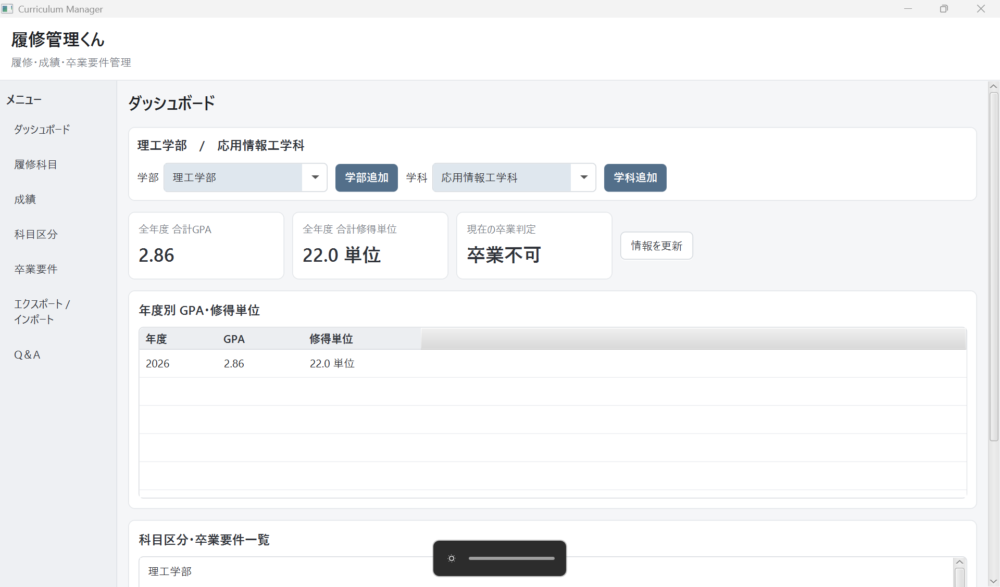
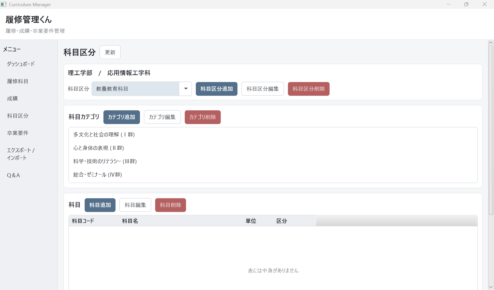
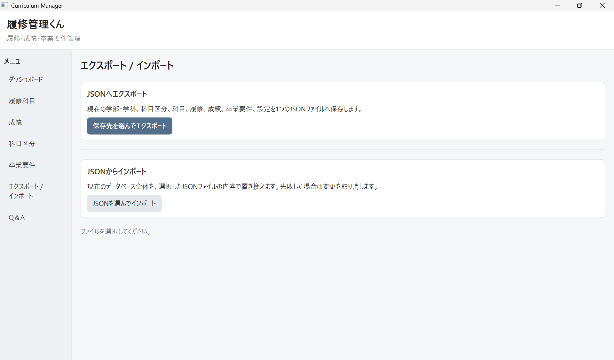

科目を分類
教養・基礎・専門や必修・選択といった区分で科目を整理。
DESKTOP APP · JAVA / JAVAFX
科目、単位、成績、卒業要件をひとつの画面で。大学生活の「いま」と「あとどれくらい」を見渡せる履修管理アプリです。
今学期も、計画的に。

科目表、成績表、卒業要件を行き来する手間を減らすのが出発点。実際に困ったことを、デスクトップアプリとして整理しました。
教養・基礎・専門や必修・選択といった区分で科目を整理。
登録した成績と単位から、学修状況をまとめて確認。
修得済みと必要な単位を見比べ、残りを追いやすくします。
科目分類の編集とデータの書き出し・読み込みを、同じアプリの中で完結させています。


ボタンで表示を切り替えられる小さな画面ツアーです。
JavaFXで画面を組み、SQLiteでデータを扱い、Go製APIサーバーとの通信にも取り組んだ構成です。